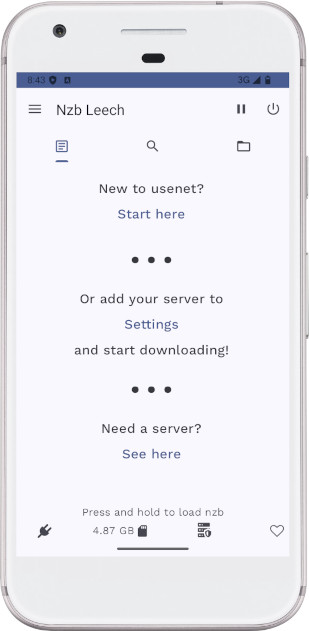

Downloading NZB files
Password protected nzbs are supported. Add password to nzb name:"my nzb {{mypassword}}.nzb" so that nzb leech automatically extracts using the password instead of manually having to select the rar file in file folder and typing in password
To switch between Wi-Fi and Data, pause your download, wait for your connections to disconnect, turn on/off Wi-Fi, then resume your download. Sometimes you won't be able to connect right away as the server may prevent you from connecting via multiple ips (Carrier ip address and your home ISP ip address)
Adding Custom Sites
There are a few sites that are not editable but the rest can be edited by clicking the Gear icon next to the site. If the Gear icon is missing, the site cannot be edited.
NewzNab Site
Make sure NewzNab button is selected and enter the API url and API Key. The API address depends on the site, but its common to have "api" appended: https://example.com/api Check with the site if you have trouble. 429 Too Many Requests or similar message means your site is restricting your api usage (either limit amount of requests per day or you must be site VIP member to use).
RSS Site
NewzNab sites are more compatible, but some rss sites work ok too. To make a RSS site searchable, use %s in your address as the value for the query parameter http://www.nzbindex.nl/rss/?q=%s&sort=agedesc
NzbKing can be added as well using their rss feature, the url will look something like this
https://www.nzbking.com/rss/?q=%s&key=YOUR_API_KEY